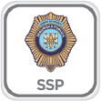
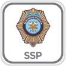
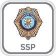
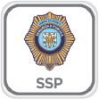

Por medio de nuestra política de privacidad le informamos las
condiciones de uso de la aplicación “MI POLICIA”. Mediante la
descarga gratuita de la aplicación “MI POLICIA”, el usuario tendrá
acceso a la información del Programa de Cuadrantes, de manera
referenciada vía GPS en su posición actual o bien, realizando una
búsqueda por Delegación, Colonia y/o Calles, podrá realizar
denuncias o quejas al Centro de Atención de Secretario y Verificar
si un vehículo fue remitido a un depósito (corralón).
El resultado de la información que verá el usuario, es de manera
gráfica un mapa con la delimitación del área del cuadrante, el
número telefónico local al que podrá marcar en caso de emergencia o
consulta de datos informativos del cuadrante.
Los
usuarios con acceso a un Smartphone con sistema operativo iOS y
otros podrán descargar de manera gratuita la aplicación.
El objetivo es proporcionar un mejor servicio de la policía a la
población usuaria de este tipo de teléfonos, que se estima en 3
millones de personas incluyendo a la población flotante. Así como
generar un mayor acercamiento con la ciudadanía, que tendrá una
herramienta para su seguridad.
La Secretaría de Seguridad Pública del Distrito Federal, protegerá los datos personales recabados con motivo de las denuncias o sugerencias realizadas al Centro de Atención del Secretario (CAS) que se realicen a través de los Smartphones (nombre, número telefónico o cualquier otro dato personal), atendiendo al sistema de datos personales denominado Centro de Atención del Secretario (CAS) y de conformidad con la Ley de Protección de Datos Personales para el Distrito Federal.
El código fuente, los diseños gráficos, las imágenes, las
fotografías, los sonidos, las animaciones, el software, los textos,
así como la información y los contenidos que se recogen en la
aplicación “MI POLICIA” son propiedad de la Secretaría de Seguridad
Pública del Distrito Federal y únicamente, se permite su uso con
fines de seguridad pública, quedando estrictamente prohibido su uso
y/o reproducción total o parcial para fines distintos de los
previstos; su modificación, transformación o decompilación, será
realizada por la propia Secretaría.
El usuario única
y exclusivamente puede utilizar el material que aparezca en esta
aplicación para fines de consulta y/o solicitud de emergencias,
quedando prohibido su uso con fines comerciales o para incurrir en
actividades ilícitas. Todos los derechos derivados de la propiedad
intelectual de la presente aplicación están expresamente reservados
por la Secretaría de Seguridad Pública del Distrito Federal.
La moneda autorizada para cualquier transacción es el peso mexicano. Su tipo de cambio varía diariamente respecto a la cotización del dólar.
Evita el uso de tarjetas de crédito, débito en lugares no establecidos.
Utiliza cajeros automáticos (ATM) de supermercados o bancos que cuenten con personal de seguridad. Usa esos cajeros sólo durante el día.
Si te extravías, mantén la calma y pregunta a un policía o dentro de comercios establecidos, por direcciones.
Mantén bien vigiladas tus pertenencias, especialmente en zonas turísticas concurridas, o en medio de una aglomeración.
En caso de asalto es mejor no resistirte, tu integridad vale más que las pertenencias y la resistencia generalmente produce violencia en los ladrones.
Evita a toda costa lugares solitarios. No aceptes el ofrecimiento de ningún desconocido para transportarte en su automóvil a tu destino.
Deja tu pasaporte y demás documentos migratorios originales bajo resguardo en la caja de seguridad del hotel. Únicamente lleva contigo una identificación y copias de los papeles que acreditan tu estancia en México.
Lleva contigo solo la cantidad de dinero que consideres necesaria para tu día de actividades. Al igual que la recomendación anterior puedes dejar el resto en la caja fuerte de tu habitación.
Usa sólo servicios autorizados de taxis y de guías.
En transportes como el metro de Ciudad de México hay vagones destinados exclusivamente para que las mujeres puedan viajar con mayor seguridad por este medio.
Como recomendación general te sugerimos no exhibir objetos de valor cuando utilices el transporte público
Come en establecimientos apropiados y evita en la medida de lo posible los puestos callejeros.
No bebas agua directamente del grifo.
Identifica los números de atención de emergencias.
Reconoce tus límites, no bebas de más. En lugares como Ciudad de México, se aplica el programa “Alcoholímetro” que detecta a automovilistas en estado de ebriedad. Los infractores son arrestados sin derecho a fianza.
Tomar bebidas alcohólicas en la vía pública está prohibido en México. El infringir esta ley es causa de detención y pago de una multa.
No aceptes el ofrecimiento de drogas. La portación y el consumo de drogas son altamente penalizados por las leyes mexicanas.
Si no te encuentras en buenas condiciones o no cuentas con un vehículo propio al salir de un centro nocturno, pide que soliciten para ti un “taxi de sitio”.